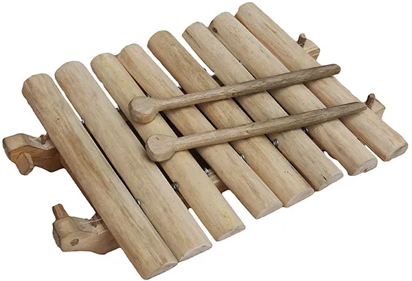
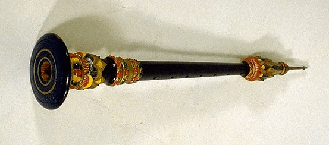
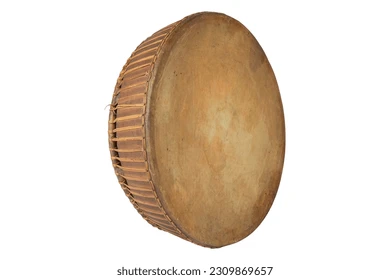
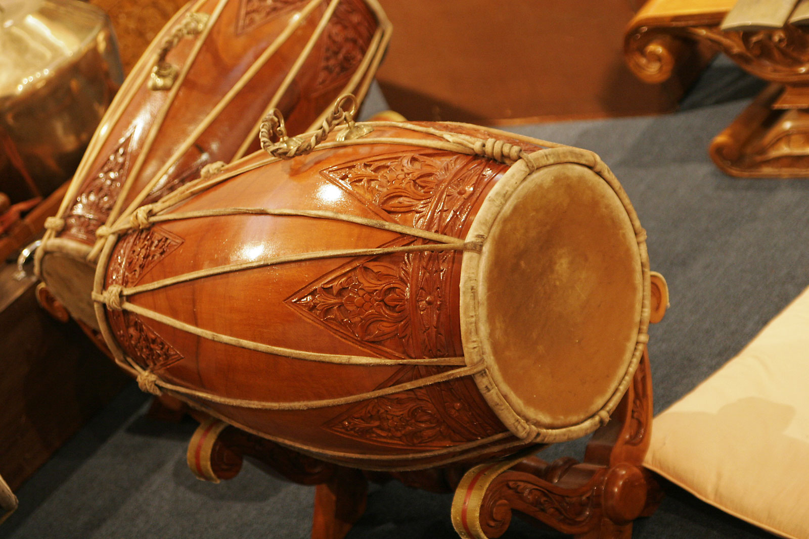
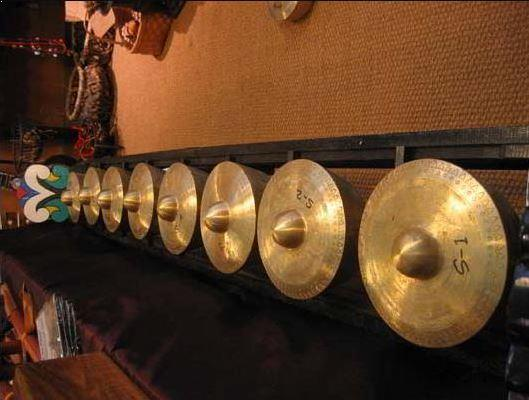
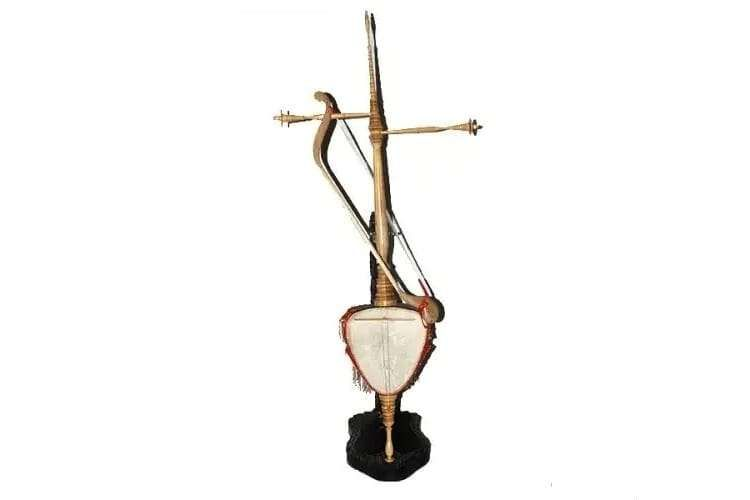

Alat Musik Tradisional
1. Doli-DoliAlat musik pukul dari bambu yang dimainkan dengan cara dipukul. Biasanya digunakan dalam acara adat dan upacara kebudayaan, menghasilkan nada seperti angklung.2. SerunaiAlat musik tiup dari kayu atau bambu, dengan suara merdu dan melengking. Serunai sering dimainkan dalam upacara adat dan perayaan.3. RedapSejenis rebana kecil berbentuk lingkaran dengan satu sisi berkulit. Redap dimainkan dengan cara dipukul, umumnya dalam tarian dan ritual adat.4. GandangMirip gendang, alat musik ini memiliki dua sisi berkulit dan dipukul dengan tangan. Gandang biasa dipakai dalam upacara dan pengiring tarian.5. KulintangAlat musik berbentuk deretan gong kecil yang dipukul, menghasilkan nada harmonis. Meski lebih dikenal di Sulawesi, kulintang juga digunakan dalam pertunjukan tradisional Bengkulu.6. Rebab BengkuluAlat musik gesek dengan suara mendayu-dayu, sering dijadikan pengiring dalam tarian tradisional dan upacara adat. Alat musik ini tidak hanya memperindah acara adat tetapi juga mencerminkan nilai budaya Bengkulu yang kaya.
backBerikut adalah penjelasan dan sedikit sejarah mengenai beberapa alat musik tradisional khas Bengkulu:
1. Doli-Doli
Doli-Doli merupakan alat musik pukul yang terbuat dari bambu. Alat musik ini mirip dengan angklung dari Jawa Barat, namun dimainkan dengan cara dipukul, bukan digoyangkan. Doli-Doli telah lama menjadi bagian dari tradisi masyarakat Bengkulu dan sering dimainkan dalam upacara adat serta acara budaya untuk memperkaya nuansa musik tradisional.
2. Serunai
Serunai adalah alat musik tiup yang juga dikenal di beberapa daerah Sumatera. Di Bengkulu, alat ini digunakan sebagai pengiring upacara adat, tarian, dan ritual keagamaan. Serunai diyakini telah ada sejak dahulu kala dan terbuat dari kayu atau bambu, serta memiliki bunyi melengking yang khas. Fungsinya dalam adat adalah sebagai pembawa pesan atau suasana dalam ritual dan perayaan.
3. Redap
Redap adalah alat musik perkusi mirip rebana yang memiliki bentuk bundar dengan salah satu sisinya ditutup kulit. Alat musik ini telah lama digunakan dalam pertunjukan kesenian tradisional, terutama dalam tari-tarian adat dan acara keagamaan. Redap mencerminkan pengaruh Islam dalam budaya Bengkulu, karena cara memainkannya dan bentuknya serupa dengan rebana yang biasa digunakan dalam kesenian Islami.
4. Gandang
Gandang adalah alat musik sejenis gendang yang berukuran sedang. Gandang telah lama menjadi bagian penting dalam budaya musik Bengkulu, terutama sebagai alat pengiring tarian dan upacara adat. Dalam masyarakat tradisional, Gandang berfungsi sebagai alat komunikasi dan sarana ekspresi emosi saat acara adat atau ritual berlangsung.
5. Kulintang
Kulintang terdiri dari deretan gong kecil yang disusun secara horizontal dan dipukul dengan pemukul kayu. Alat musik ini sebenarnya berasal dari Sulawesi, namun dibawa ke Bengkulu melalui interaksi budaya dan perdagangan, sehingga turut dipakai dalam berbagai pertunjukan seni di sana. Kulintang biasanya dimainkan untuk menambah kemeriahan dalam acara kebudayaan.
6. Rebab Bengkulu
Rebab merupakan alat musik gesek yang dikenal di banyak wilayah Nusantara. Di Bengkulu, rebab memiliki peran dalam pengiring tarian dan lagu-lagu daerah. Suara melodi yang mendayu-dayu membuatnya cocok untuk mengiringi suasana sakral dalam ritual atau pertunjukan kesenian tradisional. Sejarahnya di Bengkulu juga menunjukkan pengaruh budaya Melayu yang kuat di wilayah tersebut.
Secara keseluruhan, alat musik tradisional Bengkulu memiliki sejarah panjang yang dipengaruhi oleh budaya Melayu, Islam, dan interaksi dengan berbagai daerah di Nusantara. Masing-masing alat musik ini tidak hanya berfungsi sebagai hiburan, tetapi juga memiliki nilai spiritual dan sosial dalam budaya masyarakat Bengkulu.


.jpg)